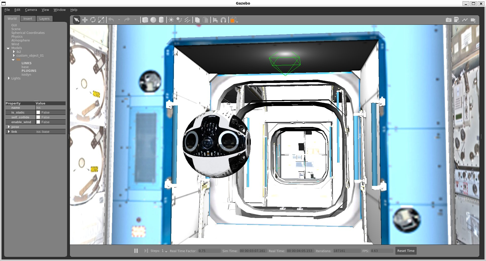
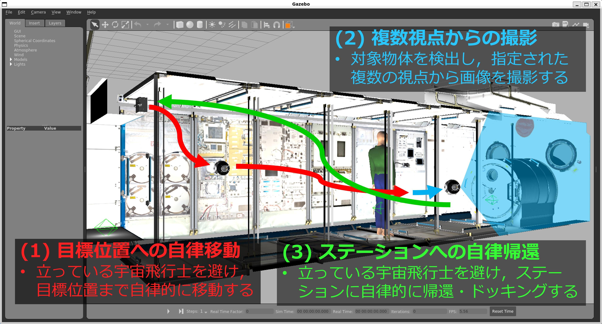

RoboCup JapanOpen 2026 @Space Challenge (第1回)
@Space Challenge は、宇宙における自律型ロボットの発展や社会実装を目指した、RoboCup Japan Openを対象とした競技会です。 本ページでは、2026年開催予定のRoboCup JapanOpen 2026 @Space Challengeの概要・ルール・参加方法を案内します。
概要
@Space Challengeは、将来の軌道上・月・惑星の宇宙開発を見据えた 「AI × 宇宙 × ロボット」技術の発展を目的とした競技会です。 自律型ロボットの競技会「RoboCup Japan Open」に新たなカテゴリとして新設しました。
第1回目となる今回は、JAXAが開発したISS搭載ロボットInt-Ball2を用いたシナリオを想定します。 JAXAが開発したInt-Ball2のGazeboシミュレータを活用し、自律的な移動やマニピュレーション、協調作業といったタスクを競い合うことで、 教育と研究の両面から宇宙ロボット開発の裾野を広げます。 第2回目以降で、実際の軌道上のISSにあるInt-Ball2を用いた競技へと発展させ、自律型の宇宙ロボットに関するベンチマーク構築を目指します。

競技に関する情報共有はもちろん、技術的な交流や開発を目的としたコミュニティ向けのDiscordサーバーを用意しています。 競技の参加に関わらず、どなたでもご参加いただけますので、お気軽にご参加ください。
競技内容
第1回目は、競技、技術交流会、Open Category (競技提案・デモ)、Exhibitionを実施します。
競技：宇宙ステーション船内の自律的な点検・確認タスク
-
目標位置への自律移動
- ドッキングステーションから目標位置まで自律的に移動する。
- この際、宇宙飛行士を避ける。
-
多視点からの撮影
- 対象物体を検出し、画角の中心になるように撮影する。
-
ステーションへの自律帰還
- 再度、宇宙飛行士を避ける。
- ステーションに自律的に帰還し、ドッキングする。

詳細なルールは下記をご参照ください。
競技ではステージを設け、宇宙飛行士の人数を増やして難易度を調整します。
- ステージ1（宇宙飛行士 × 0）
- ステージ2（宇宙飛行士 × 1）
- ステージ3（宇宙飛行士 × 2）
競技向けに、Int-Ball2のGazeboシミュレータを動かすチュートリアル記事を作成しておりますので、まずは下記をご参照ください。
技術交流会
表彰対象ではありませんが、競技に関する技術的な工夫点等をまとめたポスター発表やプレゼンテーションを通じて、自チームの技術や取り組みを紹介し、参加者同士の情報交換や議論を促進します。競技だけでなく、技術的な工夫や研究内容を共有する場として位置づけられています。
Open Category：競技提案・デモ
各チームが独自のアイデアや研究成果を発表し、10分間のプレゼンテーションと5分間の質疑応答を行います。競技とは別でアイデアを競います。審査はRoboCup関係者によって行われ、優れた発表を行ったチームを表彰します。
審査項目
-
独創性（アイデアの新規性）
提案されたアイデアやアプローチがどれだけ新規性・独自性を有しているかを評価する。既存技術の単なる組み合わせに留まらず、新しい視点や発想が含まれているかを重視する。
-
宇宙での実現性（環境・制約への適合） / RoboCupとの関連性
提案内容が宇宙環境（無重力、通信遅延、限られた資源など）またはRoboCupの制約を考慮し、現実的に実現可能であるかを評価する。理論的な実現可能性に加え、運用面での妥当性も含めて判断する。
-
社会的・ミッション的インパクト
提案が宇宙開発や社会に対してどのような価値・意義を持つかを評価する。解決しようとしている課題の重要性や、その成果がもたらす影響の大きさを重視する。
-
デモの成功・説得力（検証性・再現性）
デモンストレーションが提案内容の有効性を適切に示しているかを評価する。単なる演出ではなく、検証として意味を持っているか、また再現可能な形で提示されているかを重視する。
-
プレゼンテーション（伝達力・質疑応答）
発表内容の分かりやすさ、論理構成、資料の質、および質疑応答への対応力を評価する。提案の意図や価値が明確に伝えられているかを重視する。
Exhibition
競技やOpen Categoryや技術交流会とは別で、希望するチームが自由形式でプレゼンテーションやデモンストレーションを行うことができます。ここでは、研究成果や開発中の技術など、競技以外の取り組みを広く紹介する機会となります。
@Space Challenge 参加登録について
@Space Challenge への参加には、以下の2段階の登録手続きが必要です。
登録の流れ
- 仮参加登録フォームから登録
- チーム番号を受け取る
- JapanOpen公式サイトから参加登録を行う
1. 仮参加登録（チーム番号の取得）
まず、以下のフォームから仮参加登録を行い、チーム番号を取得してください。
仮参加登録締切：2026年3月15日
※期限内に仮参加登録が間に合わなかった場合は、個別にご相談ください。
2. 参加登録
仮参加登録で取得したチーム番号を用いて、以下のウェブサイトから参加登録を行ってください。
▶ 参加登録ページ
参加登録締切：2026年3月27日（金）
スケジュール
2026年4月 大会日程
ロボカップジャパンオープン（滋賀ダイハツアリーナ）
- 4月24日〜27日：ロボカップジャパンオープン
- 4月24日：セットアップ
- 4月25日：競技
- 4月26日：Open Category（競技提案・デモ）・技術交流会
- 4月27日：Exhibition、表彰式
詳細なスケジュールは下記をご参照ください。
競技結果
競技表彰
🥇 SOBITS（創価大学）
🥈 TIDBots（東京情報デザイン専門職大学）
Open Category表彰
🥇 SOBITS（創価大学）
🥈 TIDBots（東京情報デザイン専門職大学）
※ スコアやその他順位などの詳細な結果は、コミュニティのDiscordサーバー上で公開しております。
日本ロボット学会賞
@Space Challenge実行委員会
「地上生活支援ロボット技術の宇宙転用に向けた自律宇宙ロボット研究の競技的架橋
～地上AI技術の宇宙応用を促進する競技基盤「@Space Challenge」の構築～」
実行委員会
実行委員長
- 岡田 浩之（東京情報デザイン専門職大学）
実行委員（順不同）
- Amy Eguchi（University of California, San Diego）
- 萩原 良信（創価大学）
- 池田 勇輝（JAXA）
- 稲邑 哲也（玉川大学）
- 西野 順二（玉川大学）
- 野間 春生（立命館大学）
- 大橋 健（九州工業大学）
- 大井 翔（大阪工業大学）
運営委員会
運営委員長
- 萩原 良信（創価大学）
運営委員（順不同）
- 城地遼（SOBITS, 創価大学）
- 原光希（Try@ngulars，大阪工業大学）
- 倉田航希（eR@sers，玉川大学）
- 穂積侃（立命館MxD研究室，立命館大学）
技術委員会
技術委員長
- 池田 勇輝（JAXA）
技術委員（順不同）
- 西下 敦青（JAXA）
- 本田 瑛彦（JAXA）
- 萩原 良信（創価大学）
- 鈴木 幸志郎（創価大学）
- 仲戸川 凱（玉川大学）
- 黒川 朝陽（立命館大学）
- 古田 雄大（東北大学）
- 城地 遼（創価大学）
参加チーム
- Try@ngulars（大阪工業大学）
- SOBITS（創価大学）
- TIDBots（東京情報デザイン専門職大学）
- 立命館mxd研究室（立命館情報理工学部情報理工学科mxd研究室）
- eR@sers（玉川大学）